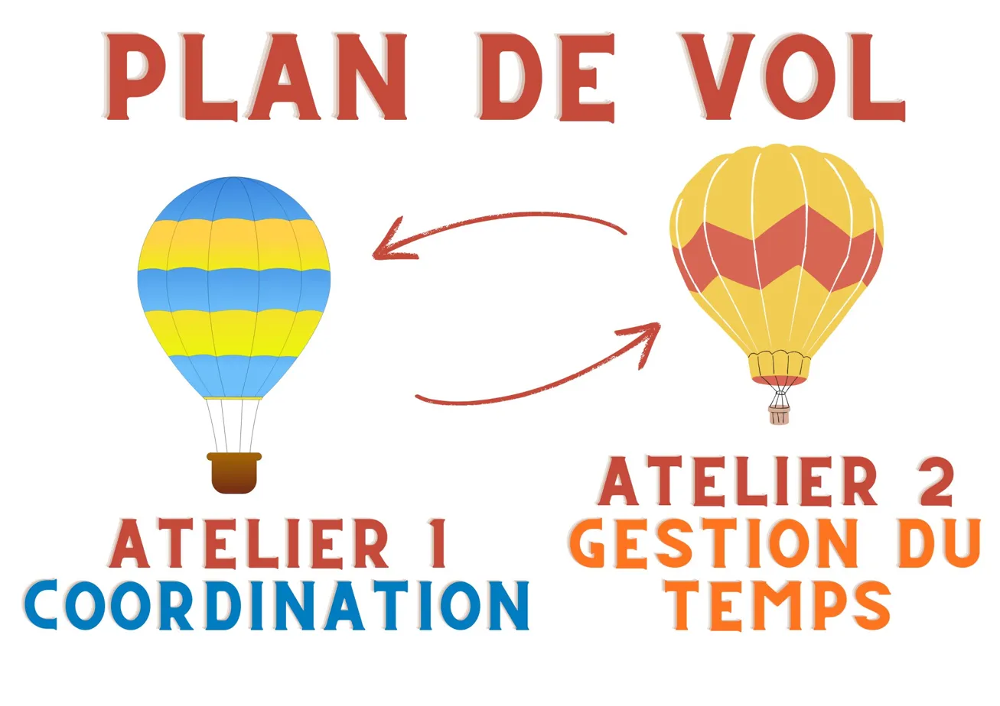
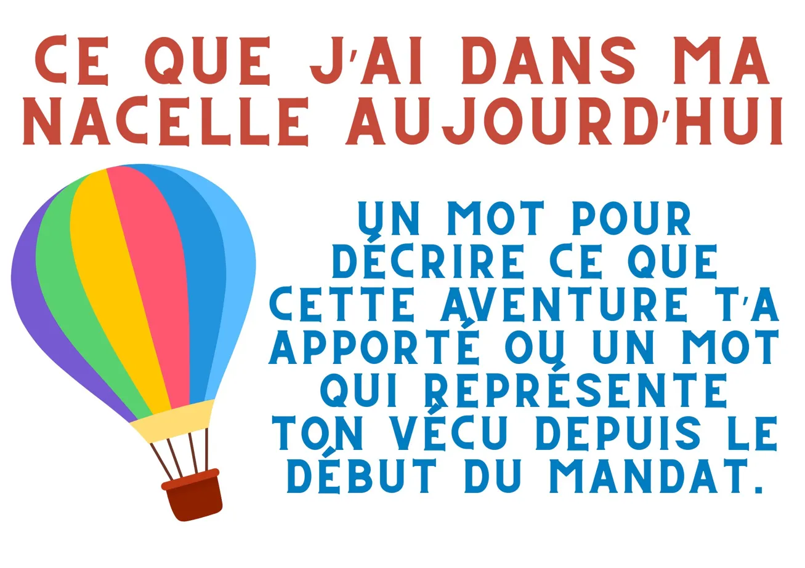
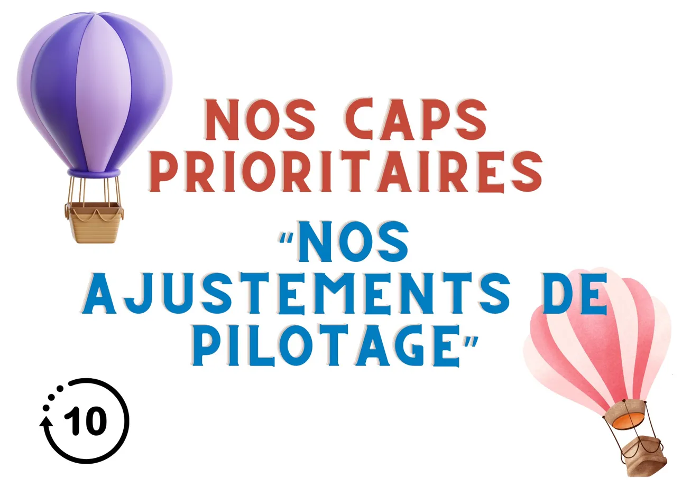
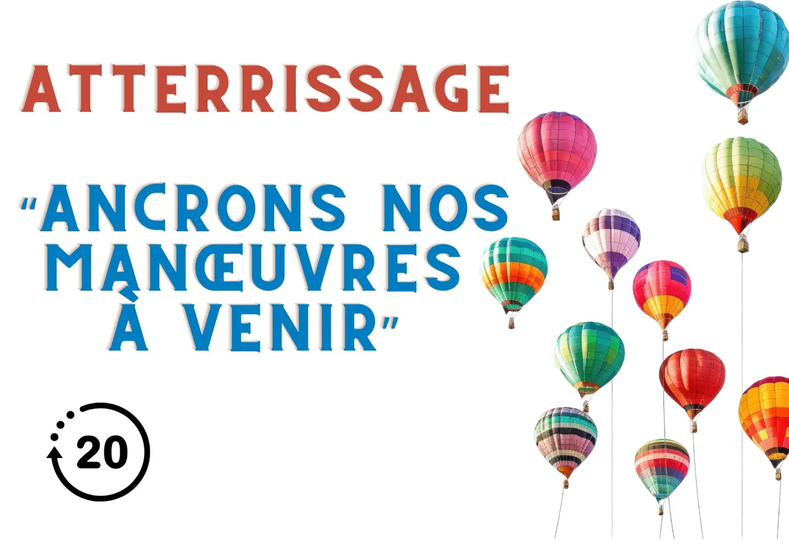
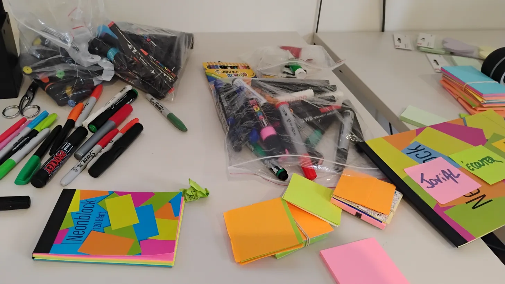

Je travaille avec des univers, des métaphores et des objets. Chaque session est conçue sur mesure : Lego, Kapla, cartels, maquettes, cadres de travail, cartes de rôles, supports visuels. L'important, c'est que chacun entre dans l'expérience à sa façon et en reparte avec quelque chose de concret.

La Cité du Vitrail transformée en musée éphémère
Retrouver des agents formés à l'intelligence collective pour un point d'étape du réseau interne. Plutôt qu'une réunion classique, j'ai créé un musée vivant : le simple fait d'inviter les participants à venir créer un musée a suffi à déclencher quelque chose.
Le Musée des Métaphores a été un moment fort : chaque objet déposé devenait une histoire, une intention, une manière de parler de la posture du facilitateur et de la puissance du collectif.
Un musée qui n'a existé que quelques heures, mais qui a laissé des traces très concrètes.

Changer de lunettes, littéralement
Animer un atelier de design collectif à partir de la restitution d'un questionnaire sur les usages et besoins de réhabilitation de locaux. Plutôt que de rester dans les données, nous avons choisi de changer de lunettes, littéralement.
En adoptant tour à tour les lunettes du public, des agents, de la coopération et du bien-être, le groupe a exploré les futurs espaces autrement : en déplaçant le regard, en rendant visibles les évidences cachées.
Moins d'interprétations, plus d'observations. Moins de solutions toutes faites, plus d'intentions partagées.


Les 4 saisons : bilan créatif de formation
Dernières séquences de la formation Intelligence Collective en intra pour les collègues du Département de l'Aube. Une équipe où la bienveillance, la bonne humeur et la créativité ont porté le groupe jusqu'au bout.
Libre cours à la créativité pour le bilan : Lego, Kapla, découpage, collage, dessin, Playmobil. Les participants ont construit des univers entiers pour raconter ce qu'ils avaient vécu et retenu.


Atouts, super pouvoirs, pépites et râteaux
Animer un bilan de mi-mandat avec les animateurs du Conseil Départemental Jeunes, non pas en cochant des cases, mais en faisant parler le terrain, le vécu et l'engagement au quotidien.
Un radar de cohésion construit en direct, des retours d'expérience, des prises de recul. Et ce virage subtil où l'on passe de “on fait ce qu'on peut” à “on sait ce qu'on fait, et pourquoi on le fait”.
Constat partagé en fin de séance : le CDJ, ce n'est pas qu'un projet jeunes. C'est aussi une équipe d'adultes engagés qui tiennent un cap ensemble.

Un laboratoire d'idées en 3 dimensions
Accompagner un groupe en formation sur l'intelligence collective. Leur engagement, leur curiosité et leur envie d'expérimenter la co-création ont transformé chaque séquence en laboratoire d'idées.
Ensemble, ils ont montré que l'intelligence collective n'est pas seulement une méthode : c'est une posture, une énergie partagée, qui permet de faire émerger des solutions créatives, concrètes et durables.

Et si on repensait l'onboarding ?
Une demi-journée pour faire diverger et converger autour d'une question concrète : repenser l'intégration des nouveaux agents dans la collectivité.
Sur un support XXL posé à plat, les participants construisent ensemble les ingrédients de la réussite. Les idées s'accumulent, se croisent, se complètent. La facilitation sert ici un enjeu RH très concret.

Oser la métaphore : “Mon projet, c'est un élastique”
Accompagner 7 professionnelles du social sur leur projet social de territoire. Après une première journée sur la posture de chef de projet et la méthodologie en intelligence collective, retour quelques mois plus tard pour aller plus loin.
En préalable, je leur ai demandé de réfléchir à leur projet et d'oser la métaphore. L'une d'elles a choisi l'élastique : tendu, détendu, absent, revient, rassemble, laisse libre. Quand la créativité s'en mêle, des vérités profondes émergent.
Retours d'expériences, introspection sur la posture, co-construction d'une fiche projet idéale : tout cela en intelligence collective.



Mission Montgolfière CDJ : prendre de la hauteur
Pour accompagner un collectif dans la prise de recul, j'ai conçu un univers complet autour de la montgolfière. La métaphore permet de parler simplement de sujets parfois complexes : les vents porteurs, les lests, les risques, les opportunités, les caps prioritaires.
Les supports créés donnent une cohérence à l'ensemble de la séance. Ils transforment le temps de travail en parcours : on embarque, on observe, on ajuste, puis on atterrit avec des décisions plus lisibles.
La métaphore n'est pas un décor. C'est une structure de pensée qui aide le groupe à se repérer.



Un fil rouge pour guider le collectif
Dans cette séquence, chaque support joue un rôle : ouvrir, cadrer, faire émerger, prioriser, conclure. L'univers graphique devient un langage partagé, facilement compréhensible par le groupe.
Ce type de dispositif facilite l'engagement : les participants comprennent où ils sont, ce qu'on attend d'eux, et comment leur contribution s'inscrit dans une trajectoire collective.
Quand le cadre est clair, la créativité peut respirer.



Les outils ne sont pas décoratifs
Cartes de rôles, cadre de travail, feutres, post-it, supports visuels : ces objets peuvent sembler simples. En réalité, ils sécurisent les échanges, distribuent les rôles et rendent le travail collectif plus lisible.
Un bon outil de facilitation aide le groupe à savoir ce qu'il fait, pourquoi il le fait et comment chacun peut y contribuer.
Le matériel n'est jamais neutre : il donne envie, il cadre, il autorise, il met le collectif en mouvement.


“Merci Nono !” : quand une formation laisse une trace
À la fin d'un cycle de formation, les participants m'ont offert ce tableau collectif. Au-delà du cadeau, c'est une trace forte : celle d'un groupe qui a vécu une expérience, partagé une énergie et gardé quelque chose du chemin parcouru.
Pour moi, c'est l'une des formes les plus puissantes de retour. Les participants repartent avec des outils, mais aussi avec l'envie de marquer le moment.
Vous voulez vivre une expérience similaire ?
Chaque projet est unique. Parlons du vôtre et construisons un cadre qui donne envie de participer.
Parlons de votre projet →